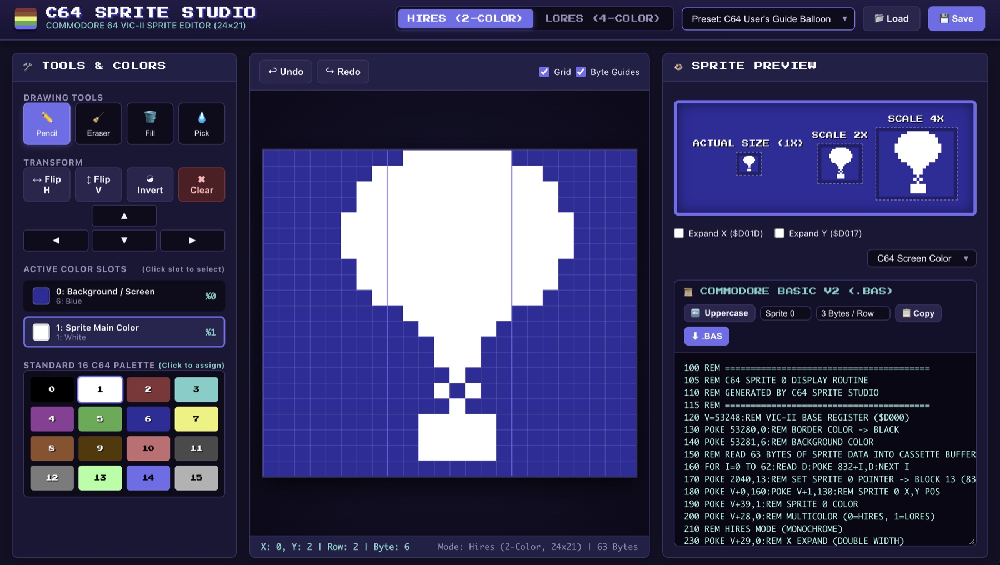

Google Antigravity / Gemini Pro
Live GitHub Pages Demo
Commodore 64 Sprite Studio
Authentic VIC-II Hardware Sprite Editor & Live BASIC V2 Generator
Created with Google Antigravity and Gemini Pro. A high-precision browser-based single page application for designing and editing Commodore 64 sprites. Features exact VIC-II hardware mode support (Hires 24×21 1-bit and Multicolor 12×21 2-bit wide pixels), the official 16-color Colodore CRT phosphor palette, and real-time Commodore BASIC V2 setup routines and DATA statements with uppercase/lowercase VICE emulator paste mode.
The Architectural Prompt
"Created with Google Antigravity & Gemini Pro. Design an authentic VIC-II hardware sprite studio in a single page app. Support both 24×21 Hires and 12×21 Multicolor modes using the official 16 Colodore CRT palette, and emit real-time Commodore BASIC V2 setup ($0340 cassette buffer, Sprite 0 pointer at 2040) and DATA statements with uppercase/lowercase emulator paste mode."
Google Antigravity
Gemini Pro
JavaScript ES6+
HTML5 Canvas
VIC-II Hardware Modes
Colodore CRT Palette
Commodore BASIC V2
Undo/Redo Engine
